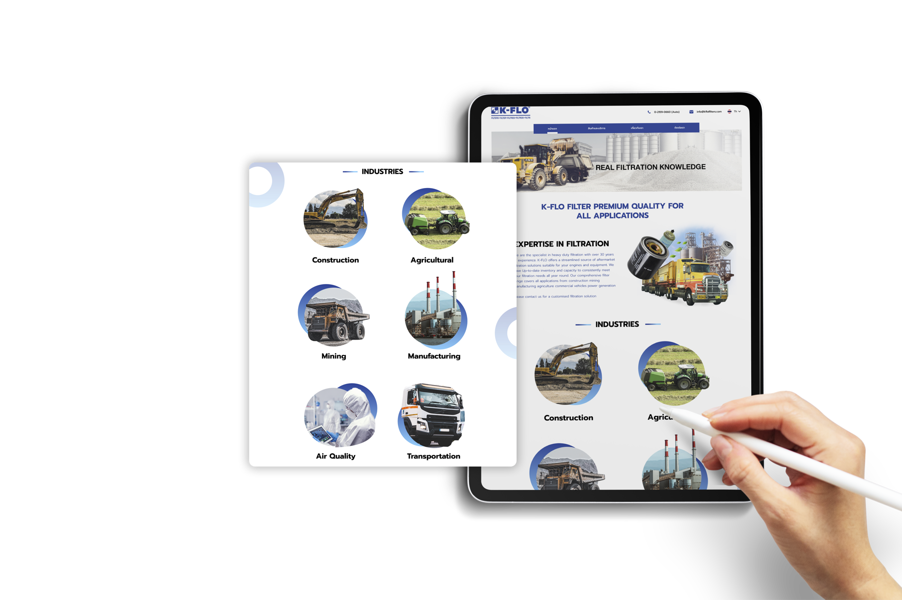
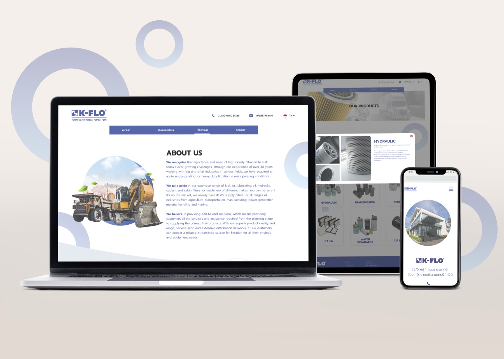
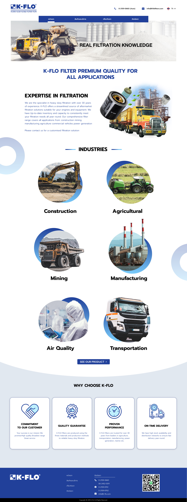
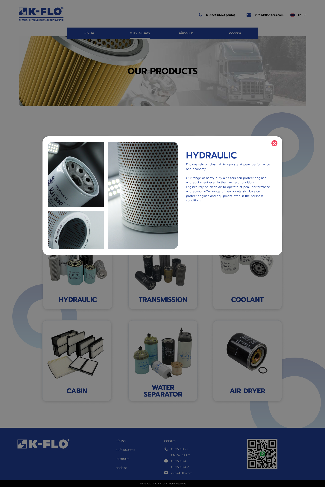

K-Flo sells industrial filters — specialist products with complex specs. The website needed to make it easy for technical buyers to find exactly what they need and order without friction.

Industrial buyers know exactly what they want — but the old K-Flo site made them work hard to find it. Categories weren't clear, the product hierarchy was flat, and there was no way to filter by technical specification.
The result was that buyers either called the sales team directly or gave up. The goal was to design a catalogue experience clear enough that customers could self-serve from first click to checkout.

Scroll inside the screen
The design was built around the mental model of an experienced buyer — someone who knows their filter type, but needs to quickly confirm the spec before committing to an order.
Restructured the product categories to match how buyers actually think — by filter type first, then by specification, rather than by internal product code.
Designed clear, scannable category landing pages that let buyers orient quickly and narrow down without having to read through long product descriptions.
A guided selection flow that walks buyers through the key specs — size, material, flow rate — so they can confirm the right product with confidence.
Clean, functional UI that communicates precision and reliability — which matters when you're selling to engineers.

The guided selection flow

Selecting a product opens the spec overlay in place — buyers confirm size, material and flow rate without ever leaving the catalogue.